Vitraux créés et restaurés au pied des Pyrénées.
Maîtres Artisans en Métiers d’Art du vitrail, François et Maryline mettent leur maîtrise de peintres verriers au service de votre projet de création ou de restauration.
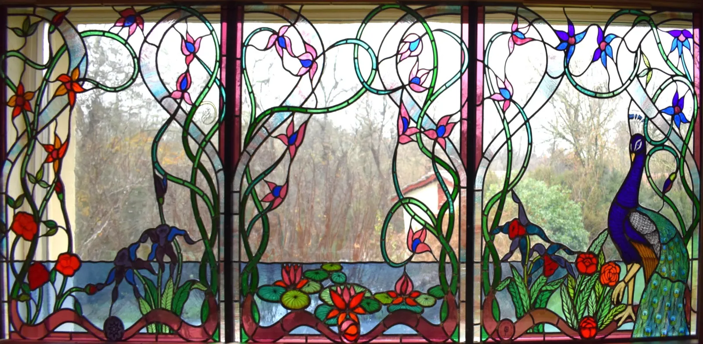
Verrière Art nouveau au paon- Montréjeauau pied des Pyrénées
- Créationdans toute la France
- Rénovation et protectionen Haute-Garonne et dans les départements limitrophes
- GarantiesRCP et décennale
Plus qu’un métier, une passion construite au fil des ans.
Pour valoriser des lieux d’exception, des lieux sacrés, du patrimoine ancien ou votre demeure.
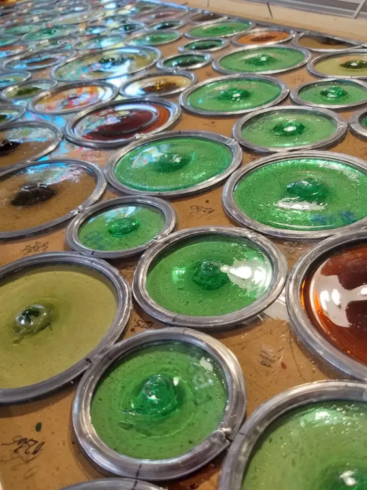
L’atelier
François, architecte de métier, peintre, passionné d’art et de techniques du bâti ancien. Maryline, diplômée universitaire, passionnée d’art, de patrimoine et de peinture. Tous deux sont Maîtres Artisans en Métier d’Art du vitrail.
Ce que fait l’atelier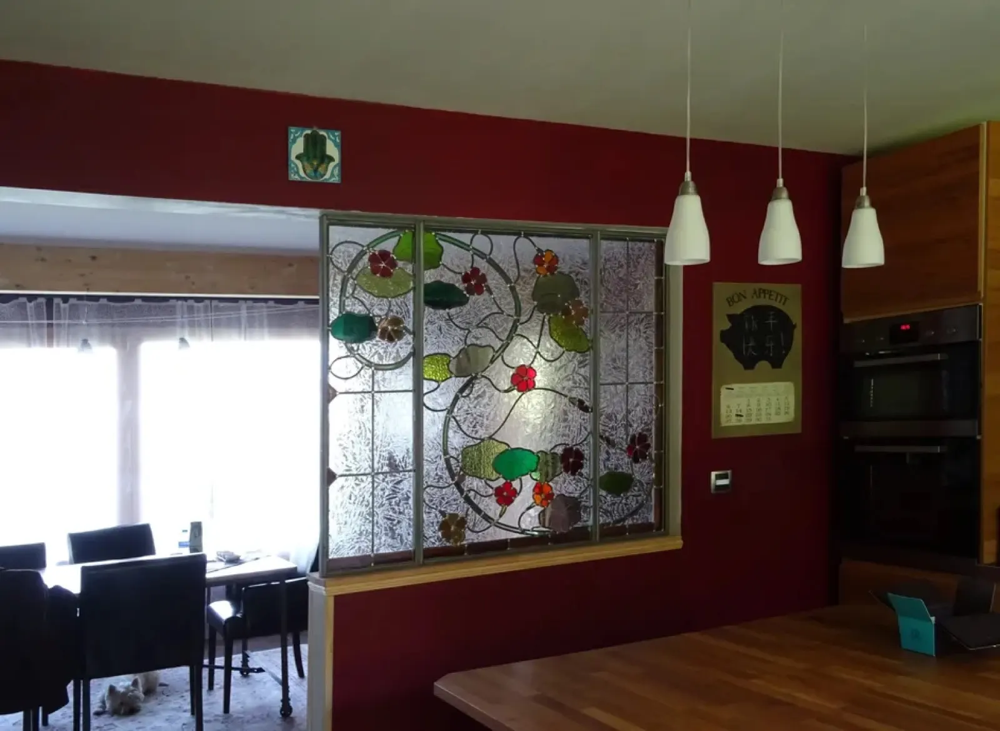
Les réalisations
Vitraux d’églises restaurés dans le respect de l’œuvre d’origine, verrières et cloisons créées pour des maisons.
Voir les réalisations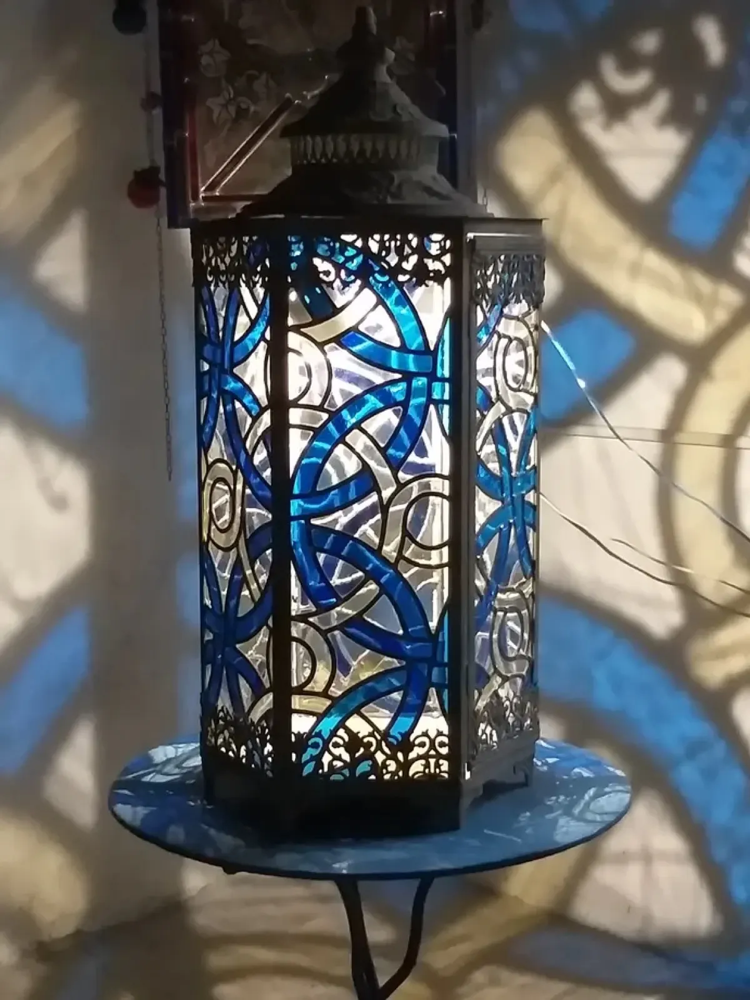
Nous contacter
Un vitrail religieux ? Une verrière de belle demeure ? Un mur rétro-éclairé dans un hôtel de charme ? Décrivez votre projet, l’atelier vous recontacte rapidement.
Remplir le formulaire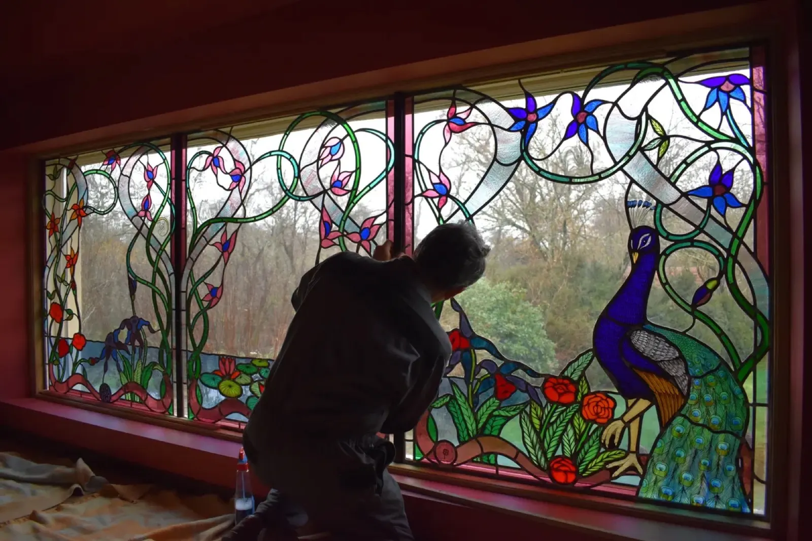
La pose de la verrière au paon.
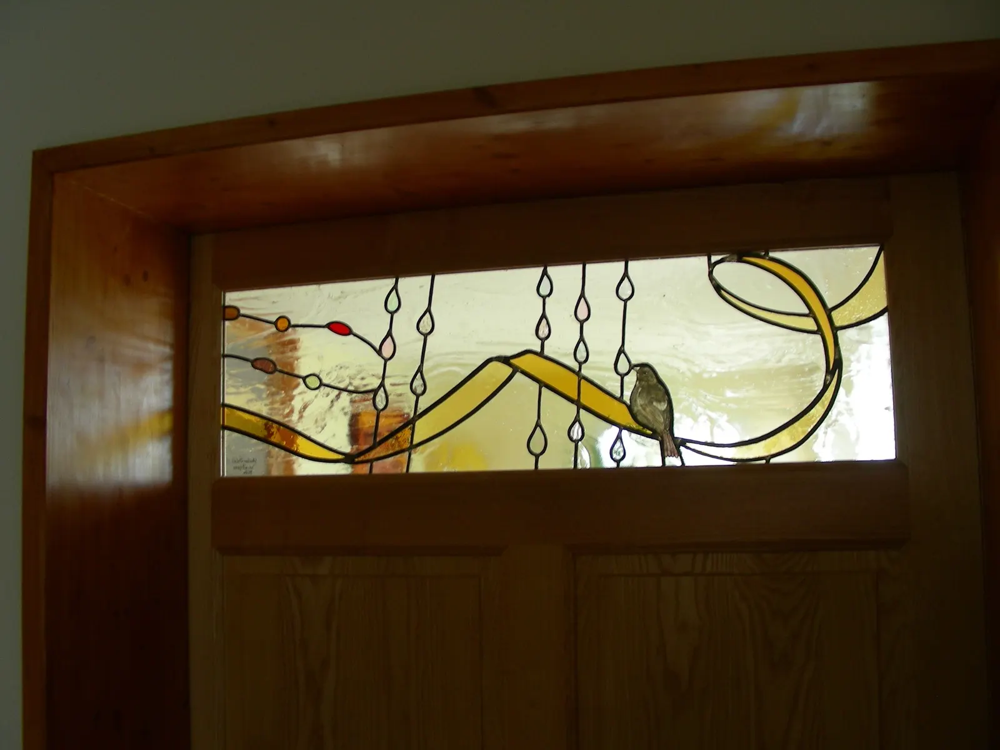
Étude, création, rénovation, livraison, pose, protection.
Le métier va bien au-delà du simple travail d’artisan : l’atelier conduit des projets complexes avec des architectes et des maîtres d’œuvre, et couvre l’ensemble des prestations jusqu’à l’aboutissement du projet.
Création contemporaine
Comme Maîtres Artisans, François et Maryline mettent leurs outils et leur savoir-faire au service de votre projet. Trouver des solutions à des situations complexes fait partie de leurs habitudes de travail.
Rénovation du patrimoine
Restaurer, c’est intervenir sur les vitraux endommagés pour leur rendre leur aspect d’origine et assurer leur longévité, en respectant les préconisations techniques du Laboratoire de Recherches des Monuments Historiques.
Saint Michel maîtrisant le dragon, chapelle de Rieux-Volvestre.
Protection des vitraux
Contre les intempéries, l’usure du temps ou les jets de pierre : un double vitrage pour une œuvre contemporaine ; pour un vitrail patrimonial, des vitrages extérieurs retardateurs d’effraction ou, selon les normes des Monuments Historiques, des grillages en cuivre ou en laiton.
« Le vitrail est la forme la plus sauvage de l’art, la plus imprévisible. Le vitrail n’est que folie, métamorphose, floraison illusoire, jeu d’algues échevelées dans une rivière de lumière. »
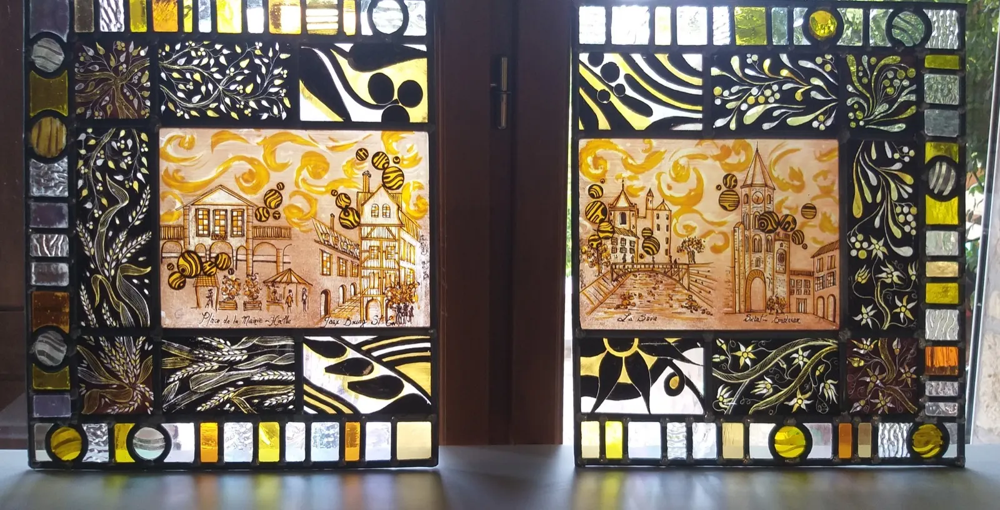
Peinture à la grisaille et au jaune d’argentÉglises, chapelles et maisons
Quelques chantiers de l’atelier, de la restauration de vitraux anciens à la création.
- Restauration des vitraux peintsÉglise de Rouffiac-Tolosane
- Restauration des vitrauxÉglise Saint-Martin
- Création et conceptionLe vitrail « Le grand peuple »
- Saint Michel maîtrisant le dragonChapelle de Rieux-Volvestre
- Restauration des vitrauxÉglise de Biert
- Lampe aux motifs cisterciensEn verre soufflé
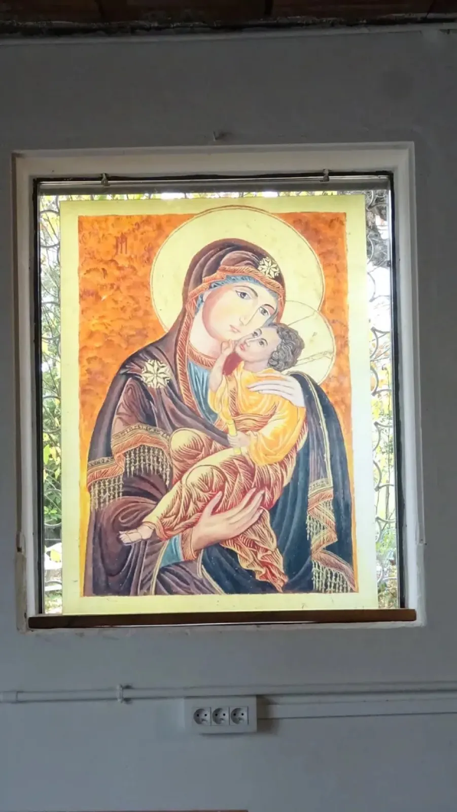
Vierge à l’Enfant peinte sur verre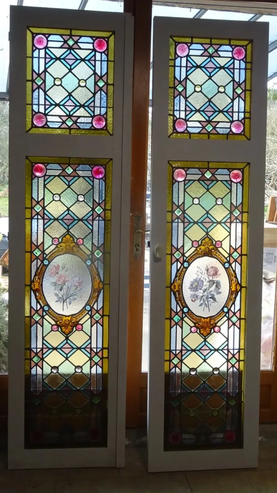
Deux vantaux de style XIXe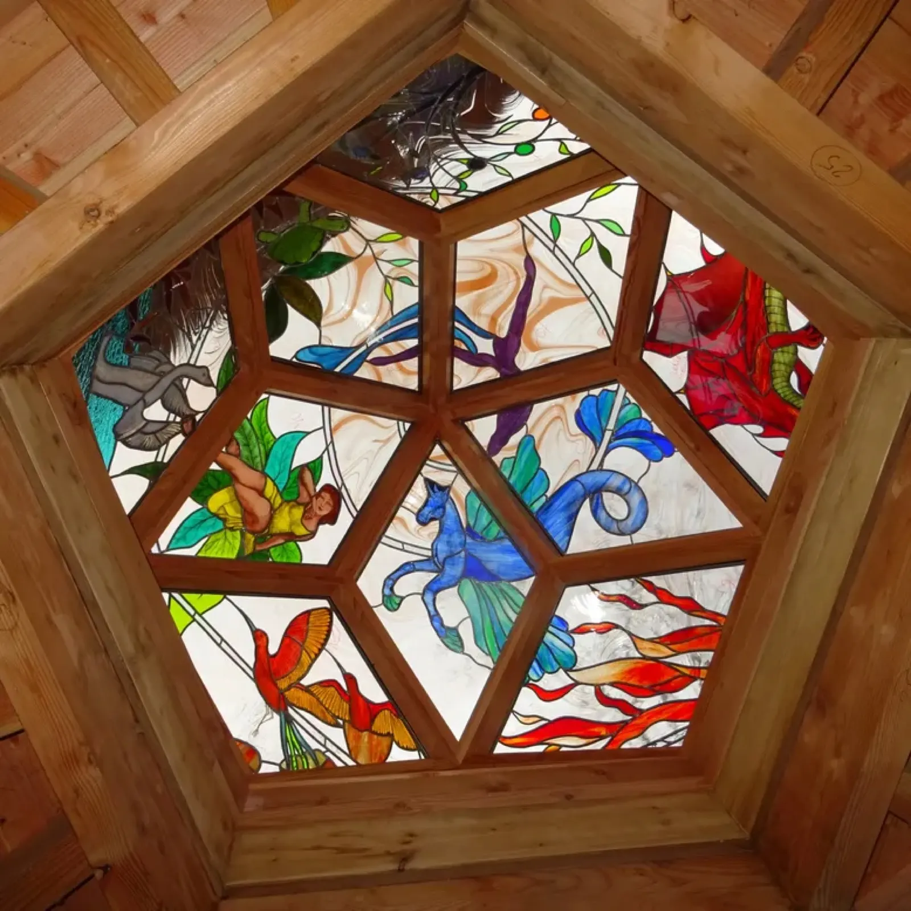
Coupole aux oiseaux et au dragon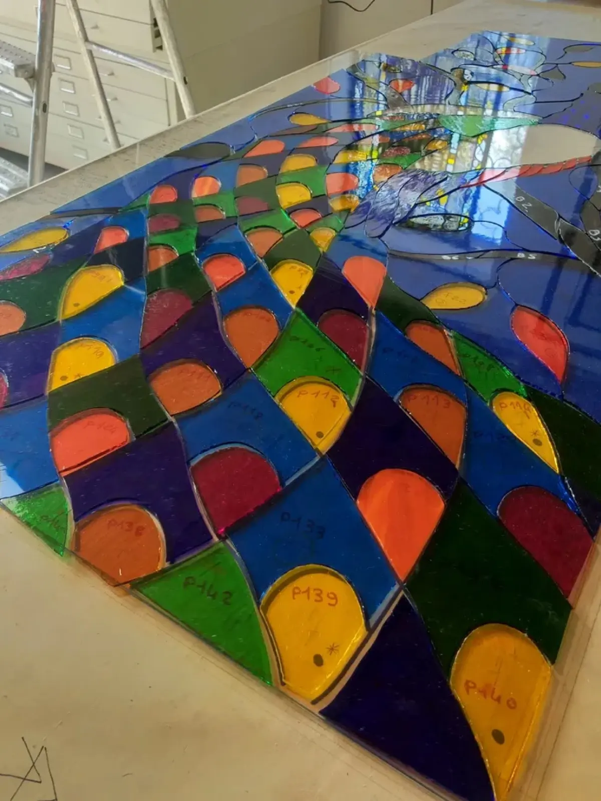
Vitrail contemporain en cours de montage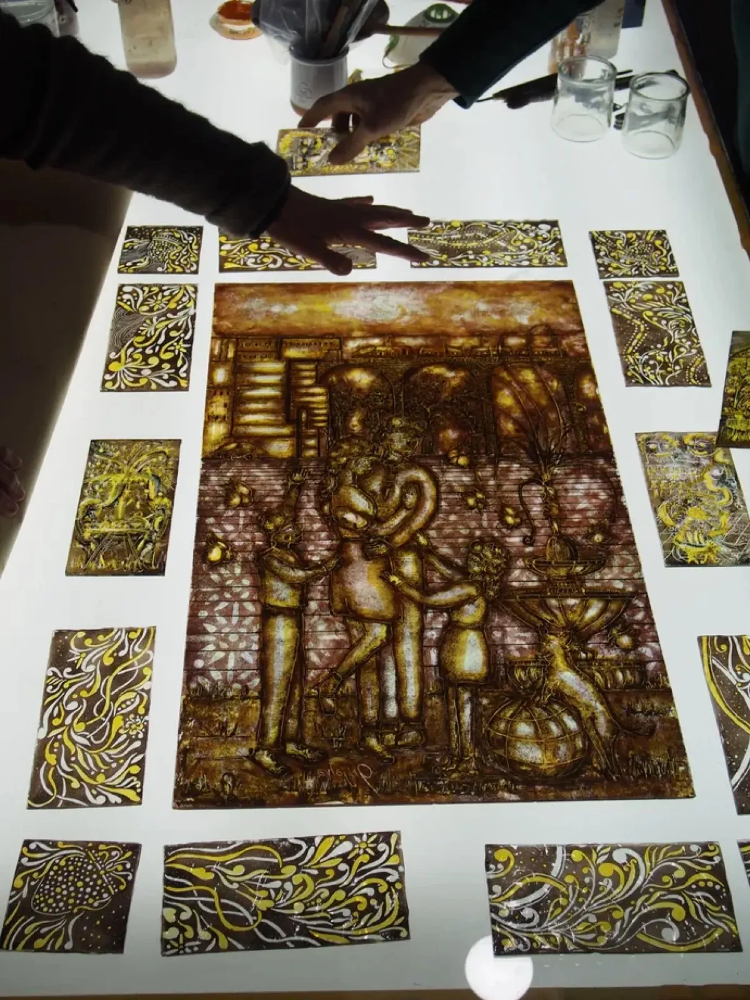
Grisaille sur la table lumineuse
Transmettre un savoir-faire millénaire.
L’exercice de cette passion au service d’un art millénaire engage aussi l’atelier au-delà de ses chantiers.
- Accueillir des élèves
Des scolaires de 3e et de seconde viennent à l’atelier pour leur stage d’observation.
- Prévenir le risque plomb
L’atelier a participé à la rédaction du guide « La prévention du risque plomb dans les métiers d’art et du patrimoine », paru aux Éditions Ateliers d’Art de France en 2024.
- Donner une seconde vie au verre
Pour aller vers une économie circulaire, les bris et déchets de verre sont donnés gratuitement à de jeunes artisans créateurs en fusing ou en mosaïque.
Parlez-nous de votre vitrail.
Création, restauration, protection : décrivez votre projet dans le formulaire, l’atelier vous recontacte rapidement. Ou appelez directement.
- Atelier
- 224 chemin de la Côte Rouge
31210 Montréjeau - Téléphone
- 06 88 23 75 96